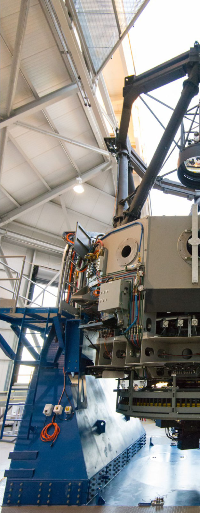
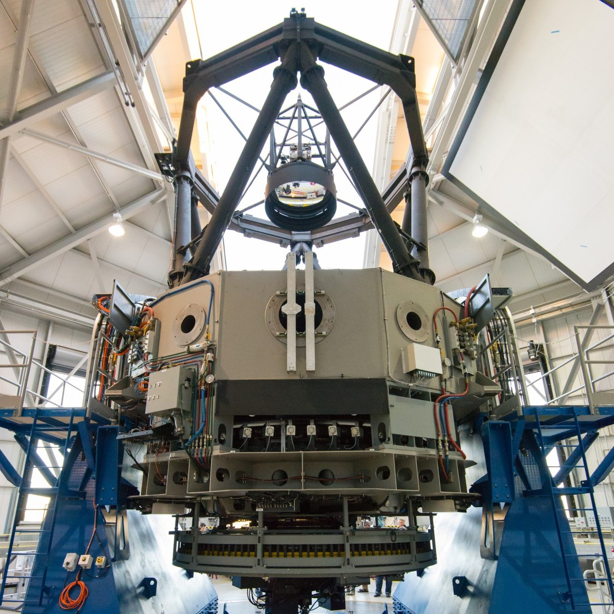

-
Yale University
Aug. 2016 - Jun. 2021
Ph.D. Astronomy
Dissertation: The Path to Extreme Precision Radial Velocity With EXPRES
-
University of Chicago
Oct. 2012 - Jun. 2016
B.A. Biological Sciences, B.A. Physics, B.S. Mathematics
-
Sheldon Wise Pre-Doctoral Fellowship, Yale University
2018
-
Graduate Research Fellow, National Science Foundation
2016
-
Google Earth Engine Scholarship, Google
2015
Google Scholar
-
Zhao, L.L., Fischer, D.A., Ford, E.B., et al. "The EXPRES Stellar-Signals Project II. State of the Field of Disentangling Photospheric Velocities" 2022, AJ, 163, 171
-
Rottenbacher, R.M., Cabot, S.H.C., Fischer, D.A., et al. [incl. Zhao, L.L.] "EXPRES. III. Using Photometric and Interferometric Observations of epsilon Eridani to Reveal its Stellar Activity Radial Velocity Signature" 2022, AJ, 163, 19
-
Luger, R., Bedell, M., Foreman-Mackey, D., et al. [incl. Zhao, L.L.] "Mapping Stellar Surfaces III: An Efficient, Scalable, and Open-Source Doppler Imaging Model" 2021, arXiv:2110.06271
-
Zhao, L.L., Hogg, D.W., Bedell, M., Fischer, D.A. "Excalibur: A Non-Parametric, Hierarchical Wavelength-Calibration Method for a Precision Spectrograph" 2021, AJ, 161, 80
-
Holzer, P.H., Cisewski-Kehe, J., Zhao, L.L., Fischer, D.A., Ford, E.B. "A Stellar Activity F-statistic for Exoplanet Surveys (SAFE)" 2021, AJ, 161, 272
-
Holzer, P., Cisewski-Keke, J., Fischer, D.A., Zhao, L.L. "A Hermite-Gaussian Based Radial Velocity Estimation Method" 2021, AnApS, 15, 527
-
Cabot, S.H., Roettenbacher, R.M., Henry, G.W., Zhao, L.L., et al. "EXPRES. II. Searching for Planets Around Active Stars: A Case Study of HD~101501" 2020, AJ, 161, 26
-
Zhao, L.L., Fischer, D.A., Ford, E., Henry, G.W., Rottenbacher, R.M., Brewer, J.M. "The EXPRES Stellar-Signals Project I. Description of Data" 2020, RNAAS, 4, 156
-
Brewer, J.M., Fischer, D.A., Blackman, R.T., et al. [incl. Zhao, L.L.] "EXPRES I. HD 3651 an Ideal RV Benchmark" 2020, AJ, 160, 67
-
Blackman, R.T., Fischer, D.A., Jurgenson, C.A., et al. [incl. Zhao, L.L.] "Performance Verification of the EXtreme PREcision Spectrograph" 2020, AJ, 159, 238
-
Hoeijmakers, H.J., Cabot, S.H.C., Zhao, L.L., et al. "High-Resolution Transmission Spectroscopy of MASCARA-2 b with EXPRES" 2020, arXiv:2004.08415
-
Petersburg, R.R., Ong, J.M.J., Zhao, L.L., et al. "An Extreme-Precision Radial-Velocity Pipeline: First Radial Velocities from EXPRES" 2020, AJ, 159, 187
-
Zhao, L., Fischer, D., Brewer, J., Giguere, M., and Rojas-Ayala, B. "Planet Detectability in the Alpha Centauri System." 2017, AJ, 155, 24

